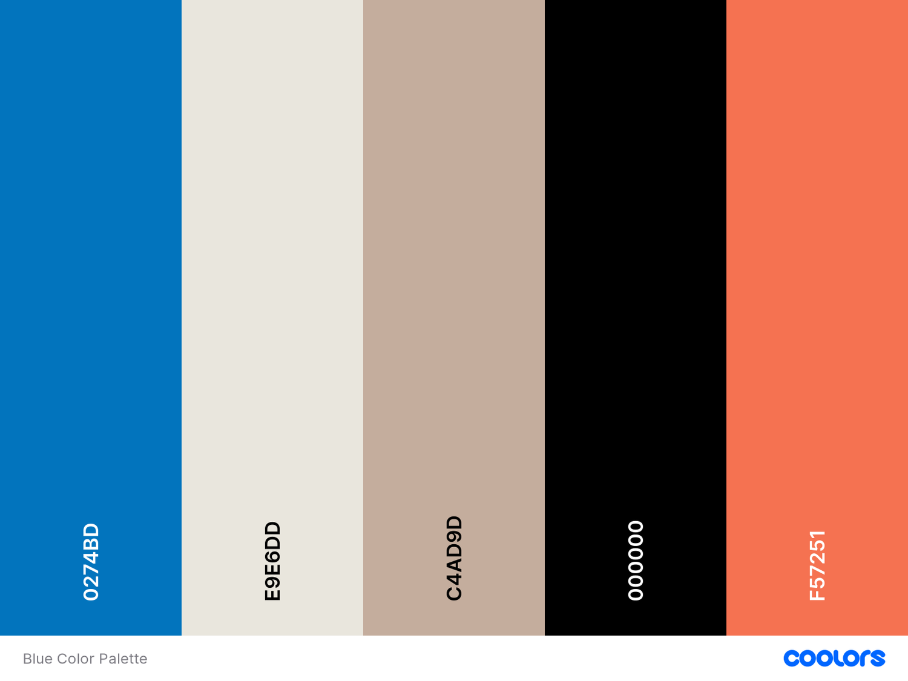
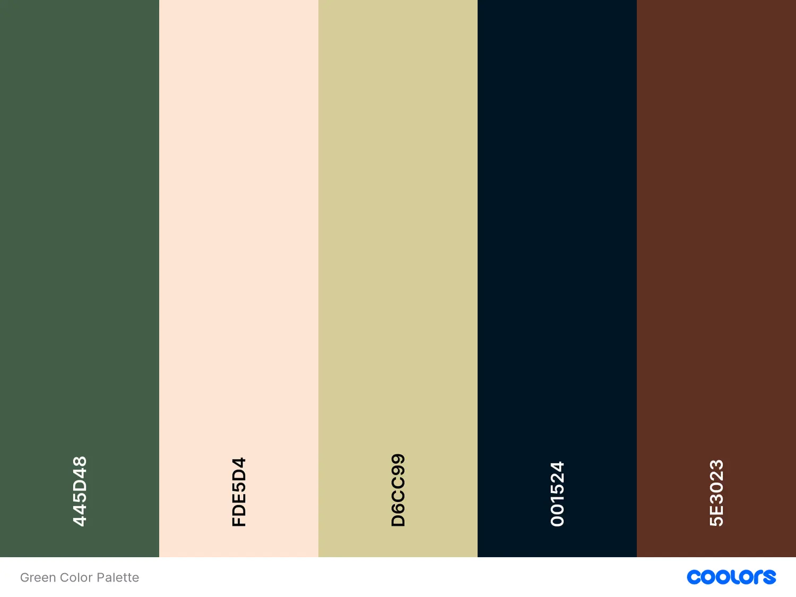
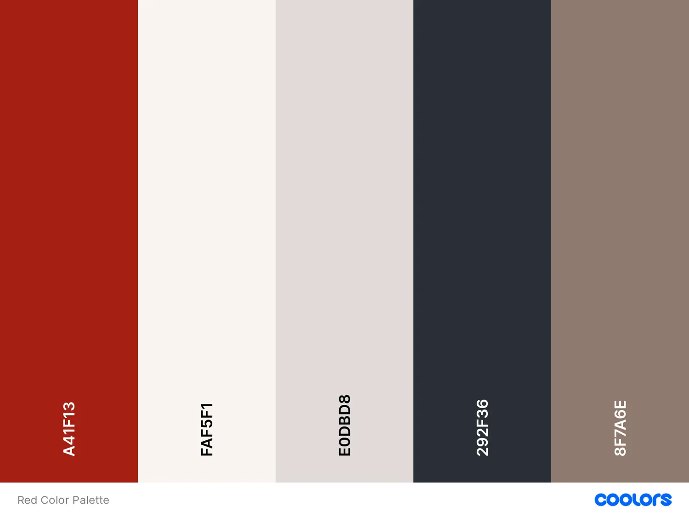
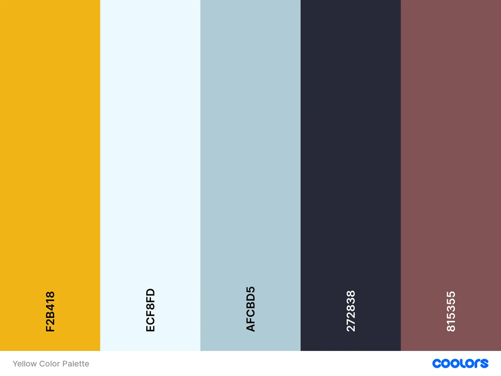
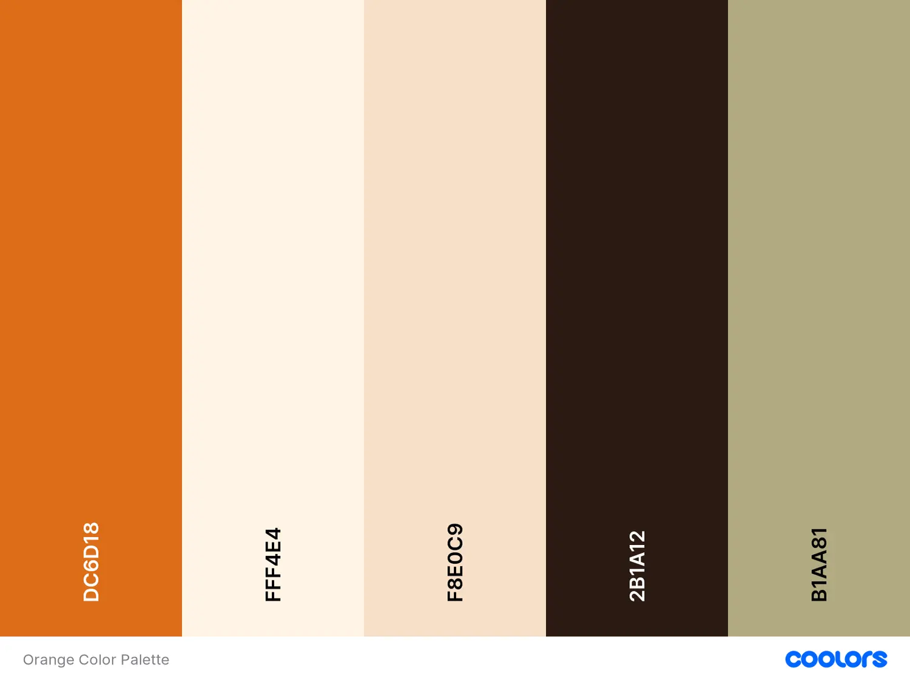
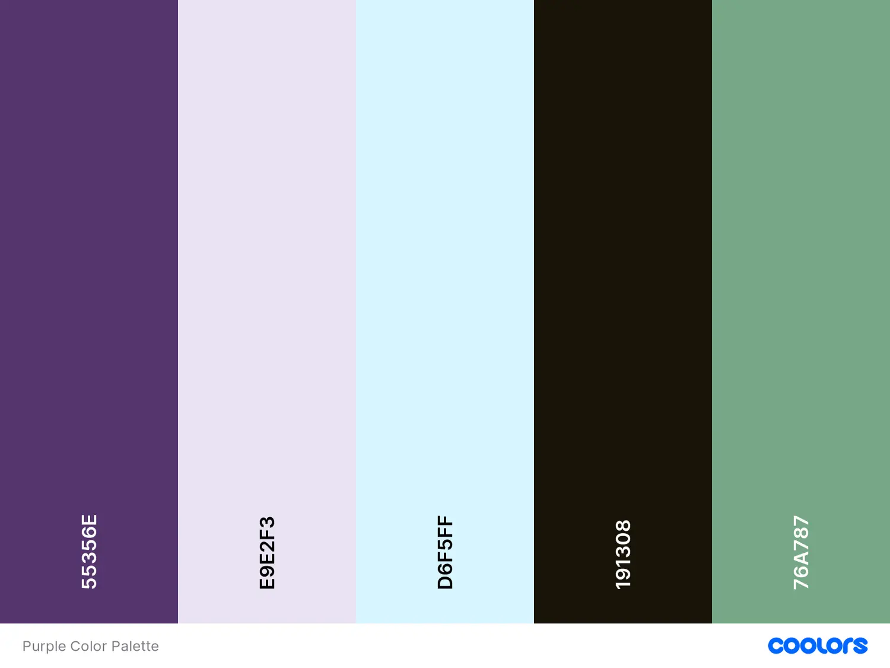
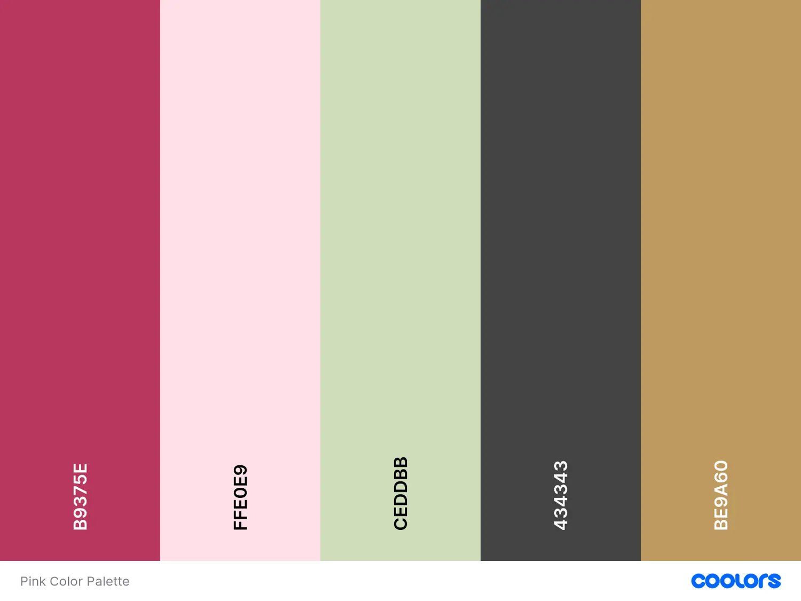
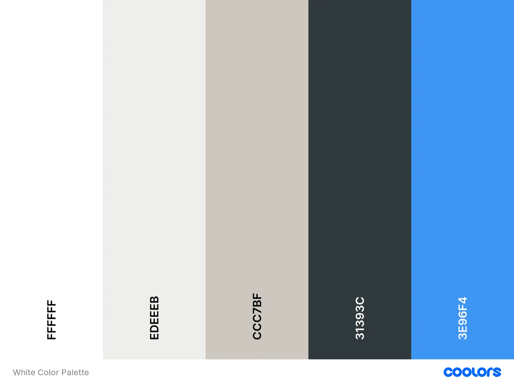
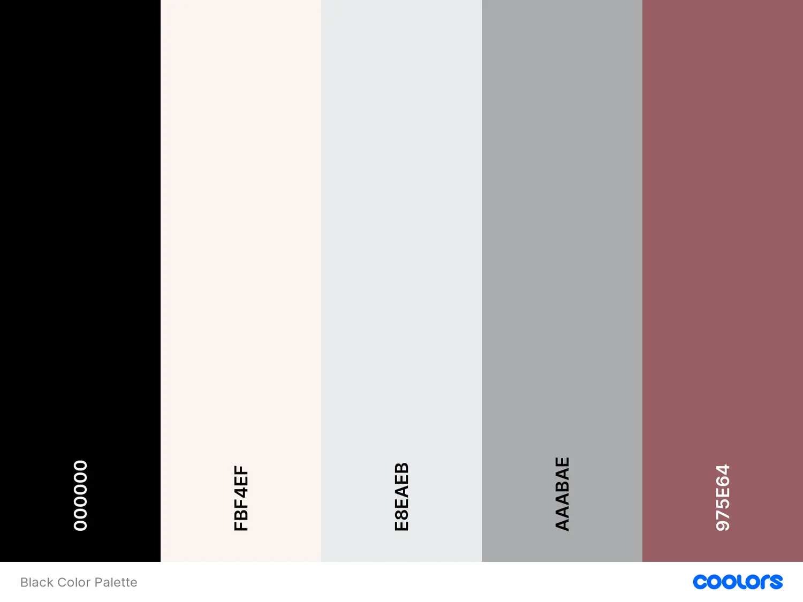
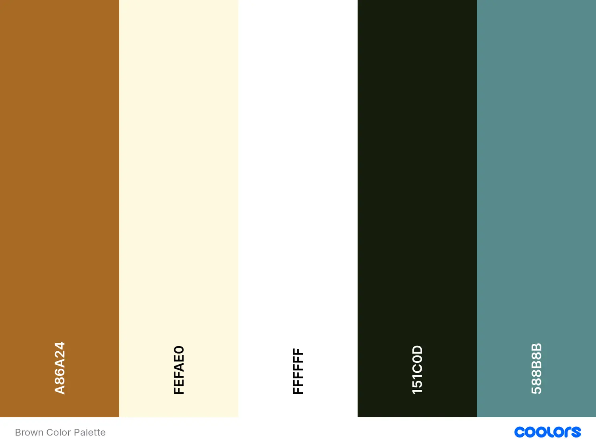

10 Aesthetic Color Palettes For Your Professional Services Brand
Colors! Choosing color palettes is one of the most interesting areas of creating a unique brand identity for your business. It is a creative process that requires careful consideration and intention so that the brand's identity is distinct and memorable.
This is true for all types of businesses and especially for professional service brands. For professional service providers, having a unique brand identity hugely helps a company in attracting the right fit audience. And colors are an important subset of a complete brand identity. We are talking about that in this post and how we can create a color palette that makes a professional service brand stand out amidst the competition.
What Are Aesthetic Colors?
Colors that are tasteful and aesthetically pleasing. They may not always be trendy but rather timeless. Such colors do a great job of enhancing the look, feel, and appeal of whatever they’re used for.
Choosing the right color palette for your professional service brand can be tricky. It’s easy to fall for trends or get stuck trying to figure out what colors to choose that feel right. That is the reason, in this post, I am sharing a custom curated list of 10 aesthetic color palettes that are sure to give your premium services an extra professional touch! Feel free to choose one from the following list and use it as it is or take it as a base and tweak it to make it your own! All the colors making up the palettes have their respective hex codes included. Simply copy and paste!
Before I dive into the list of aesthetic color palettes, let me quickly share my method of curating a color palette for a brand offering premium services. When working on brand identity design or website design for professional service brands, I create an aesthetic color palette comprising 5 colors. Here's what each of these colors is:
1.PRIMARY COLOR
This is the main bold color in the palette around which the rest of the palette is curated.
2.A SOFT NEUTRAL COLOR
This color is a contrast to the primary color and these two are used together to give a premium feel to any professional service brand’s identity.
3.A DARK NEUTRAL COLOR
This color complements the primary color combination yet it has a standalone personality that can be used to make some sections stand out, especially on a website.
4.TEXT COLOR
Some brand identity designers and web designers may not, but I include the text color in the brand color palette. It usually is a shade from the black color family.
5.ACCENT COLOR
This last color in your aesthetic color palette brings freshness and uniqueness to your brand color palette. Depending upon the feel you want to go for, the accent color could be a complete contrast to the overall palette or it could be a complementary color that belongs but does not blend in. It should do the job of attracting attention to the area where you choose to use it.
In the following list of 10 aesthetic color palettes, the colors are laid out in this exact format from left to right along with their respective HEX codes for you to copy and paste! I have used tools like Adobe Colors and Coolers to customize and curate these aesthetic color palettes for you. Enjoy!
1.Blue Color Palette
Blue aesthetic color palette with hex codes (left to right):
- Bright blue: #0274BD
- Dusty beige: #E9E6DD
- Creamy brown: #C4AD9D
- Blackest black: #000000
- Peachy orange: #F57251
2.Green Color Palette
Green aesthetic color palette with hex codes (left to right):
- Olive green: #445D48
- Rosy creme: #FDE5D4
- Almost mint: #D6CC99
- Almost black: #001524
- Espresso: #5E3023
3.Red Color Palette
Red aesthetic color palette with hex codes (left to right):
- Fresh red: #A41F13
- White fog: #FAF5F1
- Light gray: #E0DBD8
- Carbon gray: #292F36
- Soft Brown: #8F7A6E
4.Yellow Color Palette
Yellow aesthetic color palette with hex codes (left to right):
- Sunshine: #F2B418
- Powder blue: #ECF8FD
- Fresh blue: #AFCBD5
- Blackjack: #272838
- Root beer: #815355
5.Orange Color Palette
Orange aesthetic color palette with hex codes (left to right):
- Tangy orange: #DC6D18
- Ivory pearl: #FFF4E4
- Cream pop: #F8E0C9
- Almost black: #2B1A12
- Limestone: #B1AA81
6.Purple Color Palette
Purple aesthetic color palette with hex codes (left to right):
- Purple pleasure: #55356E
- Lavender love: #E9E2F3
- Popping blue: #D6F5FF
- Really black: #191308
- Sweet green: #76A787
7.Pink Color Palette
Pink aesthetic color palette with hex codes (left to right):
- Pink funk: #B9375E
- Baby pink: #FFE0E9
- Dream green: #CEDDBB
- Dark gray: #434343
- Golden hues: #BE9A60
8.White Color Palette
White aesthetic color palette with hex codes (left to right):
- Pure white: #FFFFFF
- Silver light: #EDEEEB
- Heather gray: #CCC7BF
- Dark night: #31393C
- Electric blue: #3E96F4
9.Black Color Palette
Black aesthetic color palette with hex codes (left to right):
- All black: #000000
- Fairly bright: #FBF4EF
- Blue touch: #E8EAEB
- Wintery cool: #AAABAE
- Romantic vibes: #975E64
10.Brown Color Palette
Brown aesthetic color palette with hex codes (left to right):
- Warm brown: #A86A24
- About yellow: #FEFAE0
- Whitest white: #FFFFFF
- Dark black: #151C0D
- True turquoise: #5E3023
CONCLUSION
For professional service brands looking to carve a niche for themselves in the premium space, an aesthetic color palette for your brand is just another way to confidently stand out. Choosing colors is a creative exercise where you’re allowed to break rules! The only point is to be mindful of choosing colors that help express your brand identity correctly. Looking for something more custom that is curated specifically for your brand and website keeping in mind your ideal target audience? My fully custom brand identity design service is just for you! This is where I offer brand strategy, custom logo design, a curated aesthetic color palette, typography, and custom branded graphic design to make your brand’s message as well as visuals fully cohesive and confident. I’d love to chat with you! Book a complimentary discovery call with me as a first no-strings-attached step to level up your brand.